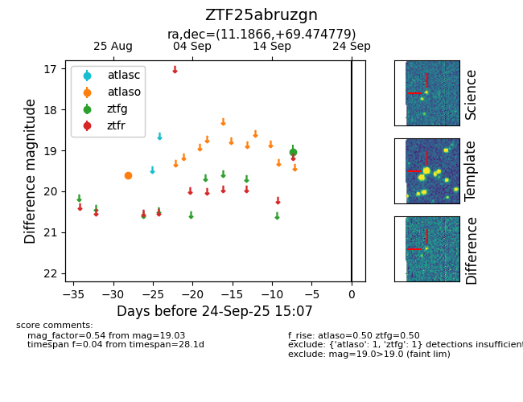

FINK: ZTF25abruzgn
Lasair: ZTF25abruzgn
ALeRCE: ZTF25abruzgn
ZTF25abruzgn (ztf,fink)
equatorial (ra, dec) = (11.1866,+69.47478)
galactic (l, b) = (122.3415,+6.61070)

last atlaso=19.61, ztfg=19.03
1 atlaso, 1 ztfg detections